k-Day 088｜被風困住
離開前先到休息站消費，感謝他們收留我。
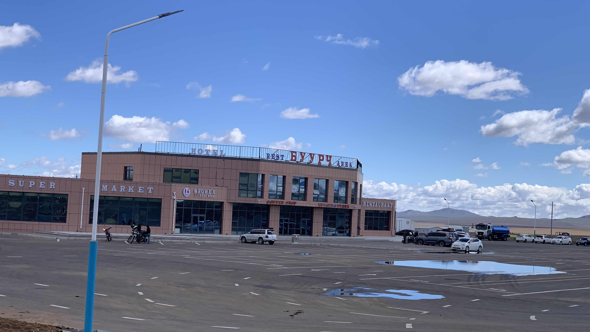
回頭拍了一張照片。昨晚大風大雨，要是沒有小屋的牆，帳篷裡面應該早就濕透了。
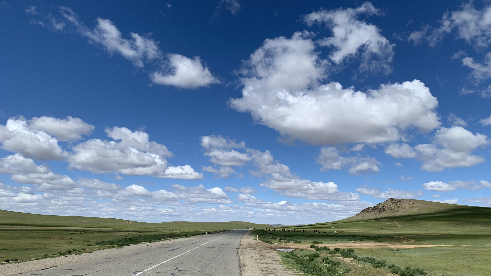
今日依然是逆風，已經放棄掙扎。只要不下雨，這樣慢慢踩，一個月後也能抵達口岸的。
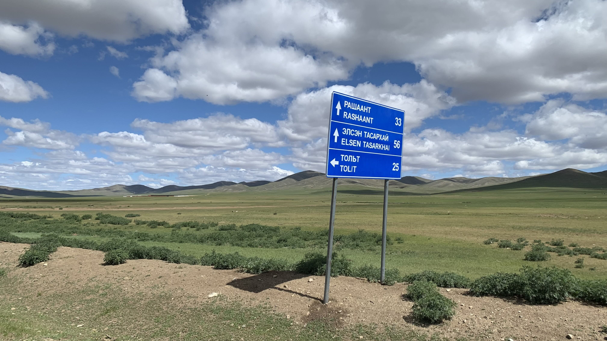
倒是今天的山勢起伏已經呈現波浪狀。
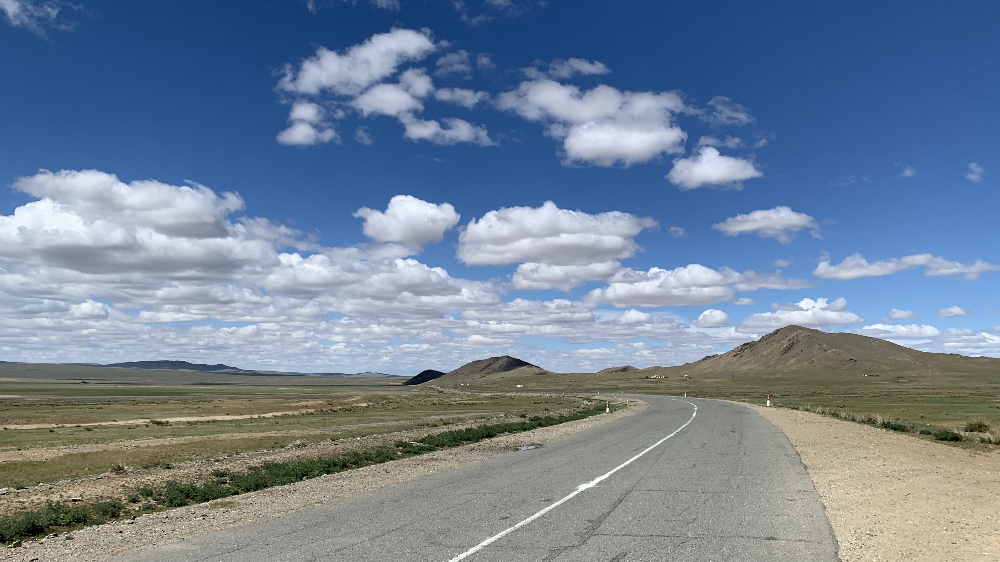
是這樣的，我已經被風吹到說不出任何有意義的話了。即便安全帽有耳罩包覆，裡面還蓋上一層頭巾，我的耳膜每天都被風吹到疼痛，甚至懷疑是不是已經穿透耳膜在腦殼裡面形成小龍卷風了。
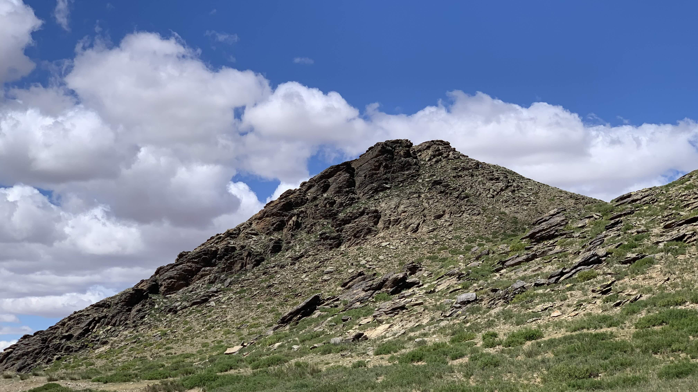
經過這座山下，覺得片岩很漂亮，剛好有個理由停下來休息。
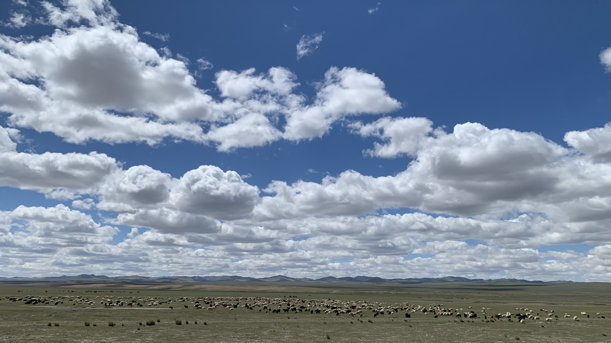
拍完山再轉頭拍拍對面整群的綿羊和山羊。
正拍得開心，手機畫面裡出現一位騎著摩托車的牧民從羊群後方往我這裡過來。難道是偷拍羊群冒犯了什麼文化禁忌嗎？
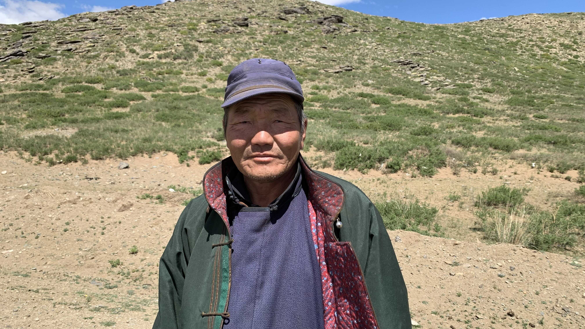
眼看照片中這位大哥停好車，爬上土坡，我立刻一句先發制人：「撒巴農？」大哥立馬回了一句：「撒。撒巴農？」看來只是跑來閒聊的。
大哥問我要往哪個方向去？我表示聽不懂蒙語。他立刻說：「哈拉和林？」
「Tee!」聽懂地名立馬回「是的！」
大哥問：「在哪裡睡覺呢？」同時比了國際睡覺手勢。
我拍了拍帳篷和睡袋，再往草原方向一指。
大哥又問：「從哪裡來？烏蘭巴托？」
「Tee!」
就這樣尬聊一陣，大部分的對話就是大哥說一句，我重複那句話，比如「很冷吧？」我回：「冷！」
即便是這種程度的對話，竟然也聊得很開心，究竟是大哥太好聊還是我的蒙語又提升了？
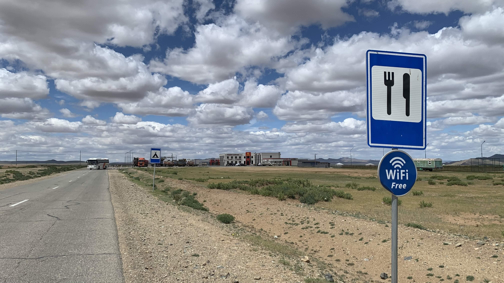
雖然開心也不能一直聊下去，告別了提供精神能源的大哥，來到另一個路邊休息站。
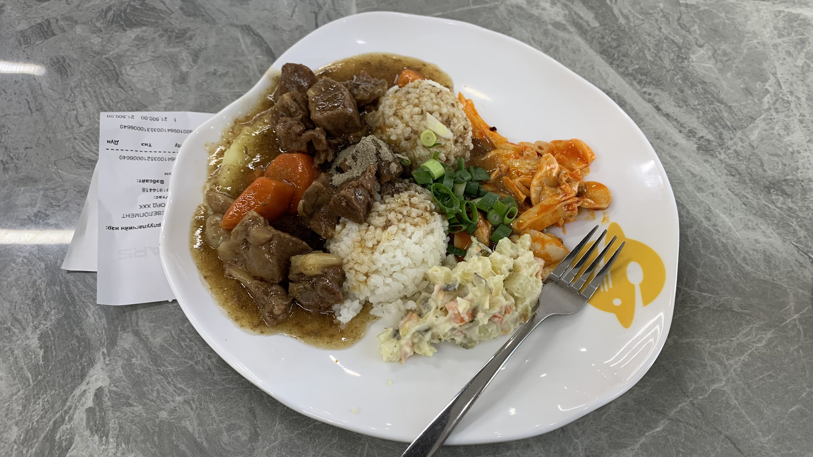
配菜竟然是酸辣口味的杏鮑菇，意料之外地好吃。
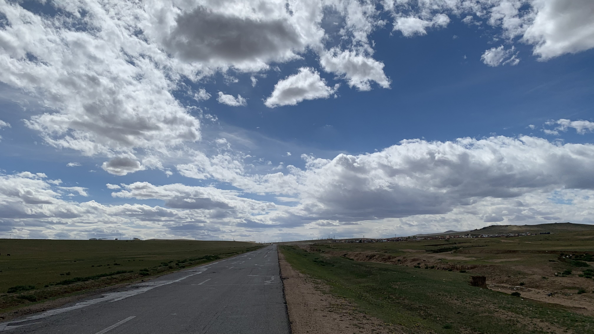
吃飽後繼續煞風。今天好幾度就站在路肩，垂著雙手，閉上眼，仰起頭對著天，試圖讓一切消失。
當然風還是一直撞擊身體和耳膜，即便只是站在原地，每分每秒都能感覺到能量不斷被帶走。
下午時分，已經近乎絕望的我終於決定戴上耳塞。風聲減緩的瞬間，再次閉上眼、仰起頭，在腦中對著天空用力吶喊。此時感覺對向車道有輛轎車停下來。睜開眼睛，看到一輛酒紅色轎車裡坐著一位戴墨鏡的阿北，手握著方向盤略顯擔心地正在觀察我。趕緊擠出精力充沛的單車旅行者微笑，對他揮揮手。
我一直在思考，這幾天究竟處於什麼樣的精神狀態。最相似的形容大概是每天播放10小時沈浸式瓊瑤劇，裡面的無論是哪個激動咆哮的男主角不斷抓住我的肩膀雙手搖晃，持續整整六天的感覺。
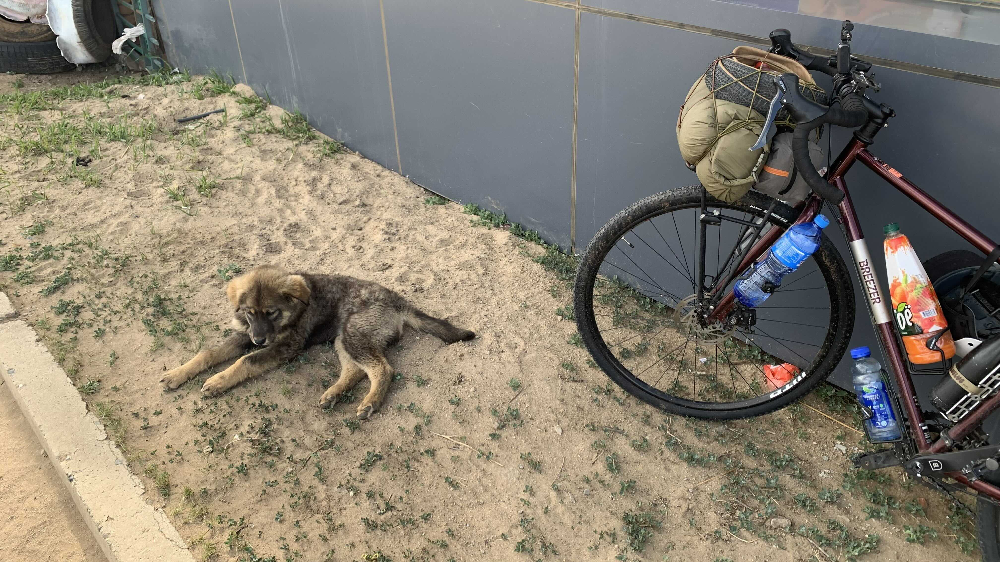
停在路邊的CU，其實並不想吃什麼，實在是太想讓耳朵休息，決定六點前都待在室內。
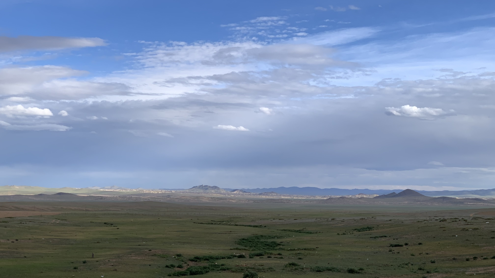
今天的目標是不遠處的休息站，聽說有一片小型沙漠，是著名的觀光景點。出發不久就在遠處看到開闊的沙色的風景，心裡產生雀躍的感覺。這幾天確實懷疑比起草原和山谷，自己是否更偏好沙漠的景色？或者我只是被大雨和逆風消磨了所有的審美意志？
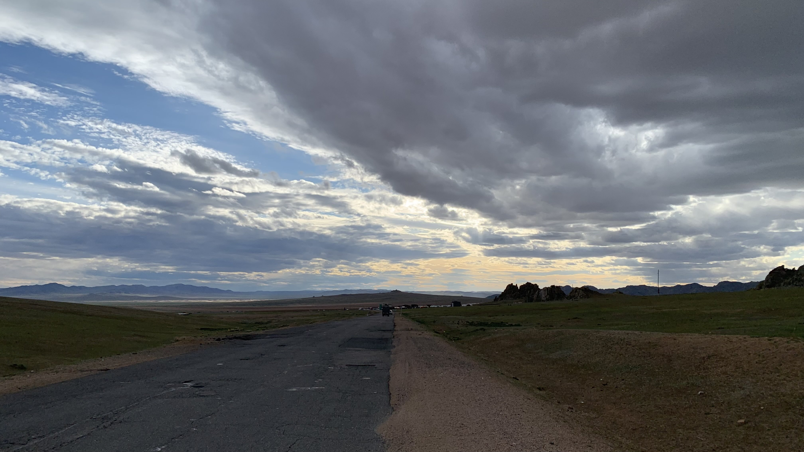
就這樣迎來今日最後一個下坡，拜託讓我的耳朵獲得安寧吧。
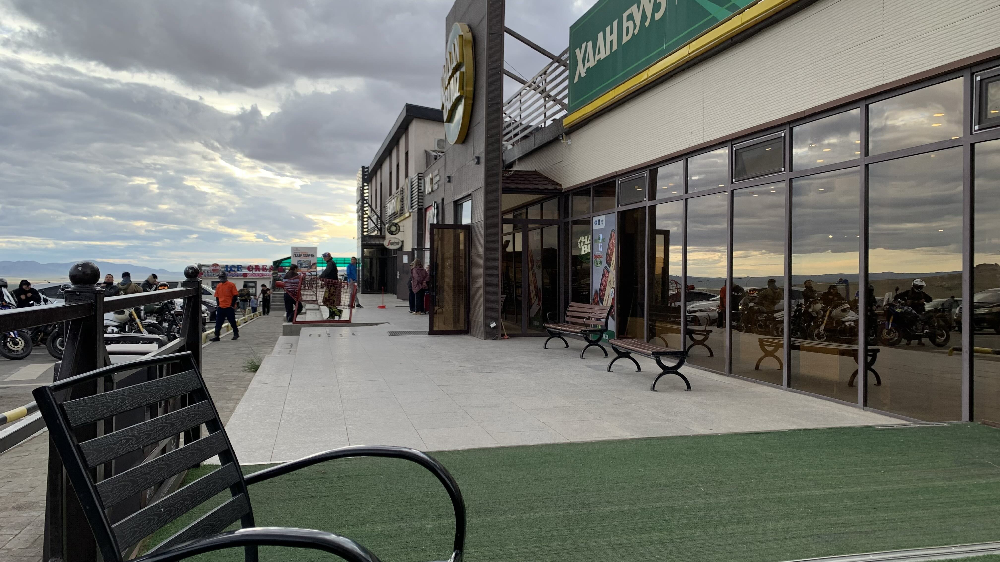
意料之外是個用喇叭大聲播放著嘻哈流行樂的地方，人潮多到不太可能在此搭起帳篷。
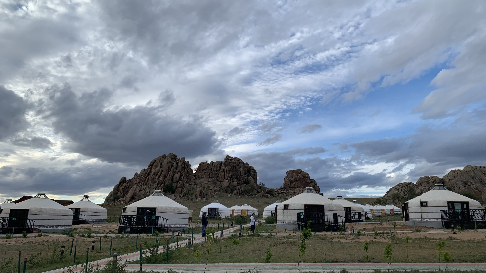
繞到後方發現一群相當商業化的蒙古包，詢問管理員能否讓我在旁邊的角落搭帳篷，他打了電話詢問老闆，結論是「不可能。」
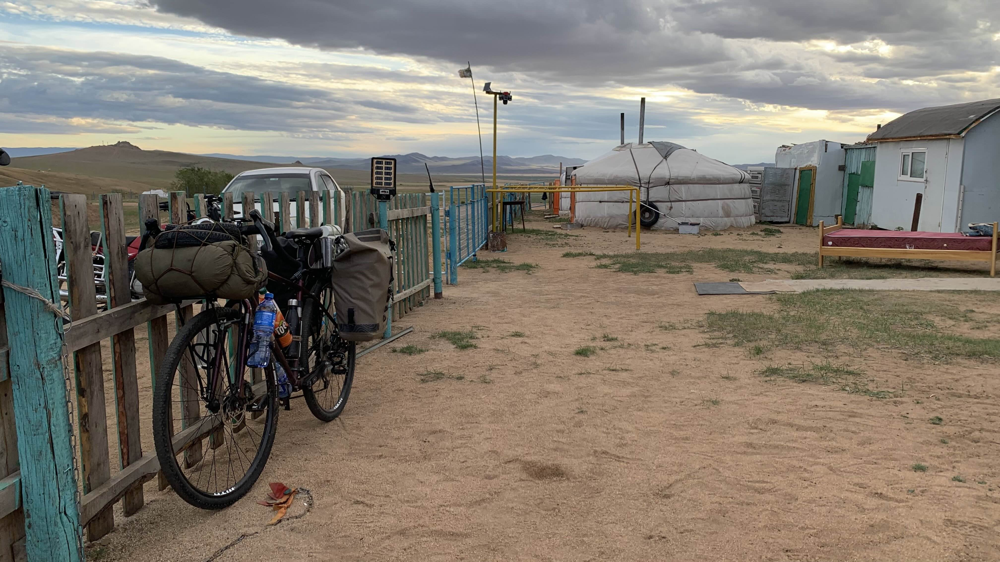
於是騎著車到馬路對面的一戶人家，弱弱地問了在欄杆旁看著我的一名男子：「能否讓我在附近紮營？」他回頭幫我問了真正的主人，於是獲得了在院子住一晚的權限。
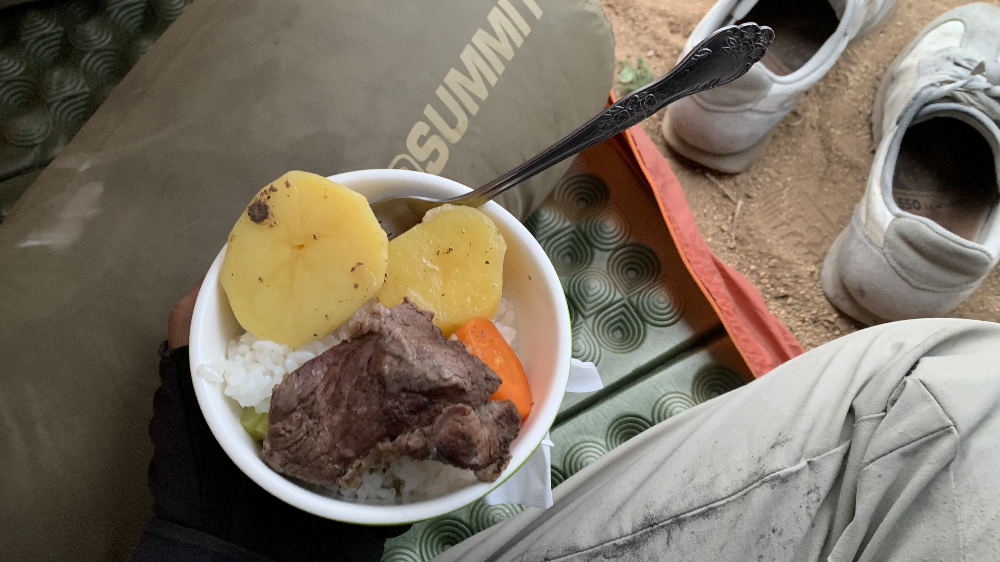
坐在帳篷裡正要煮泡麵，女主人竟然拿了一碗超好吃馬鈴薯蘿蔔燉羊肉。原來此處也經營住宿，晚上有三位報團的旅客就住在這裡，他們分了晚餐給我吃。
對此我實在感到相當抱歉，如果只是普通民家收留我也罷，既然對方就是經營住宿的，而我在這搭起帳篷還吃了飯，豈不是白嫖仔？抱著複雜的心情用一分鐘左右吃完手中的飯，準備進蒙古包和大家致謝。
就這麼被留在蒙古包裡多吃了一碗飯，還參觀了裡面的高檔馬鞍等等物件。
原來在柵欄邊和我說話的是導遊，三名團客分別是來自英國的情侶和在東京工作五年的印度小哥。這是他們最後一晚，剛好住在這個蒙古包裡，而我又剛好牽著車走進來，大家就坐在一起了。
和他們分享了行程，說到今日風大，聽著蒙古包外呼嘯的風聲，他們竟提議還有多出來的床位，可以跟他們一起在蒙古包裡睡一晚。
本來還在猶豫，推開門看到帳篷在黑夜中被風吹得左右晃動的景象，瞬間請印度小哥幫忙帶著家當躲進蒙古包裡。
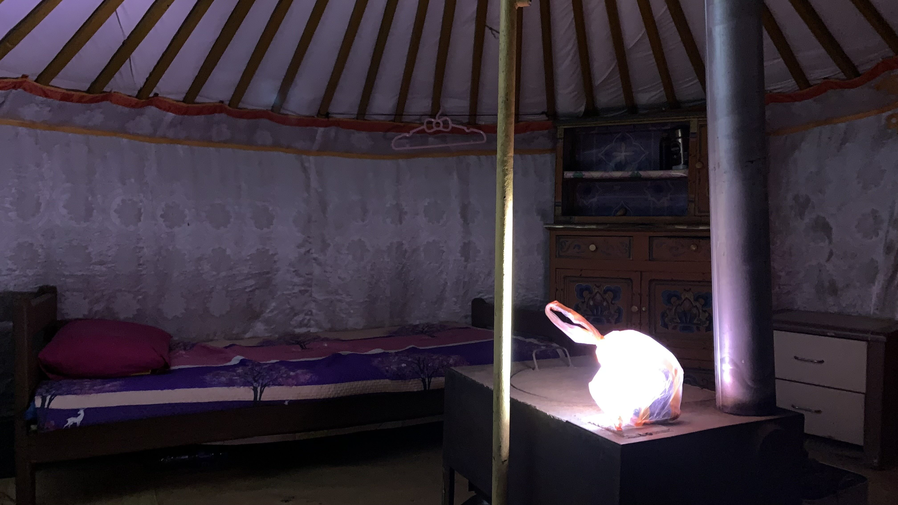
這個蒙古包沒有燈，因此導遊和印度小哥說必須安排他到有電力的另一個蒙古包，於是就剩下我一個人住在裡面。把頭燈丟進塑膠袋，坐在床上看著內裝發呆。
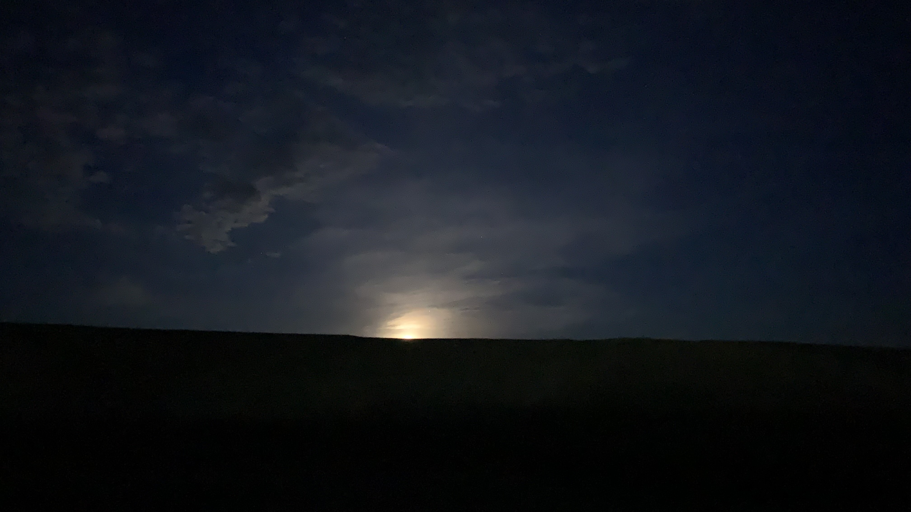
心虛地出門尿尿時，看到後方山頭出現紅色火光，正想著是否對面有什麼節慶活動，月亮就這麼升上來了。
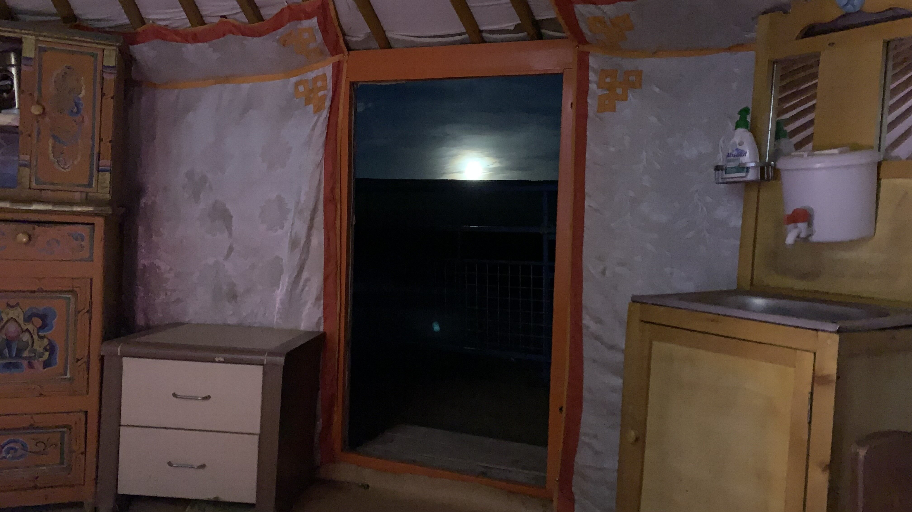
回到蒙古包裡，坐在床上看著門外的景象，門框過於明確地分割了日常和景色，將兩者同時呈現在眼前，很有種超現實的況味。
想起在大連時對於「間」這個字的思考，此刻我真的成為坐在門內看著月光的人了。
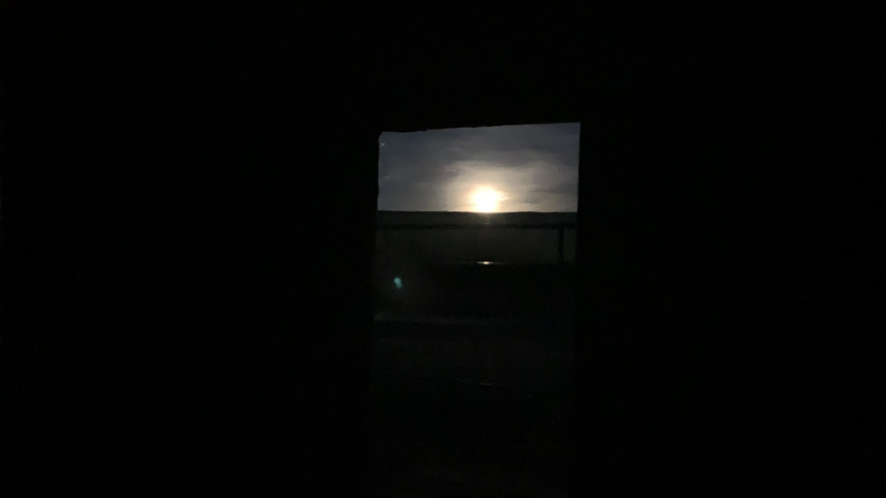
關燈後依然捨不得把門關上，心裡想著未來該如何報答這個國家。
今日花費： 泡麵+水+士力架+可樂+咖啡 37530、午餐 21500、咖啡零食 17500元